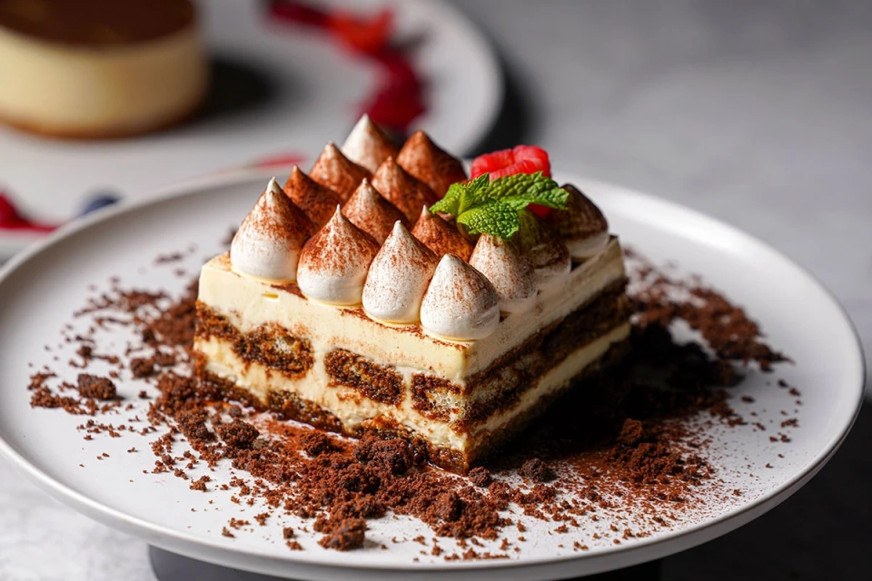
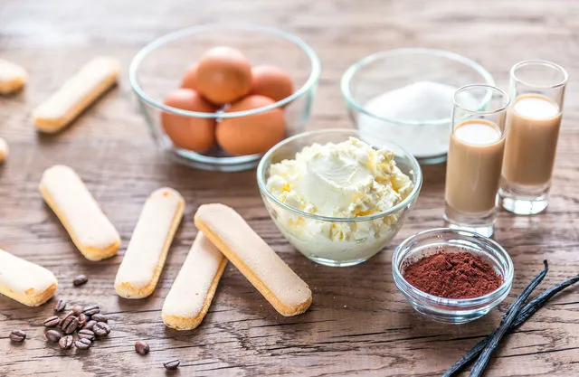
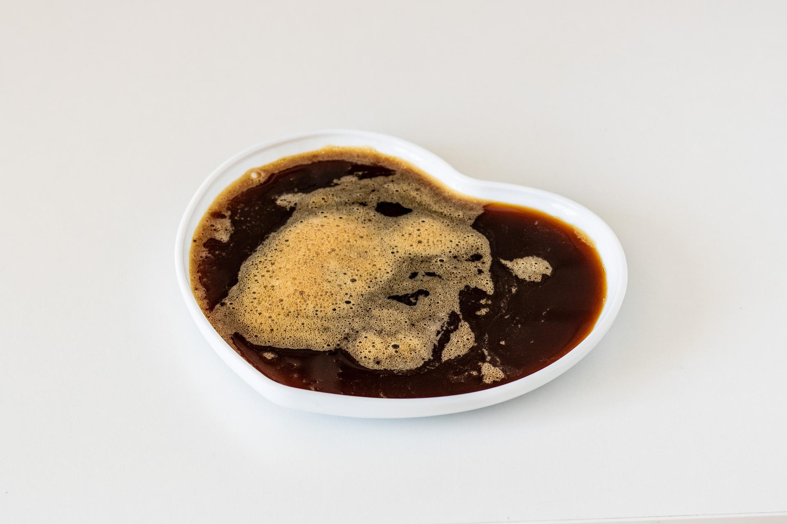
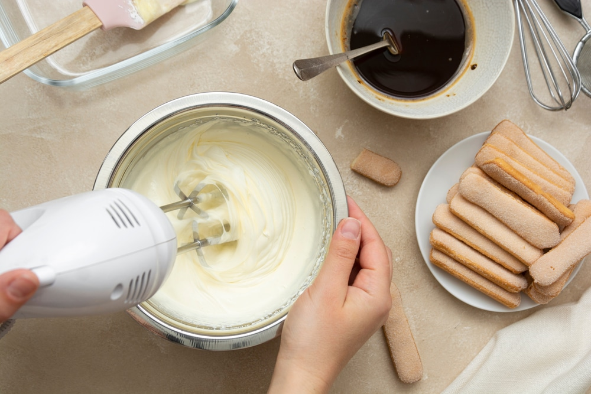
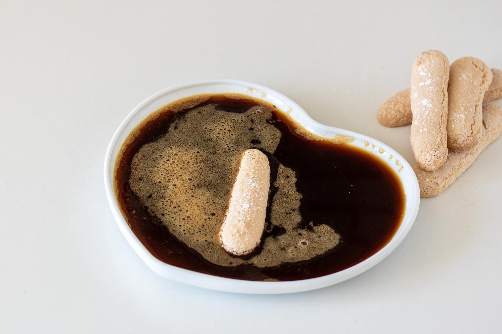
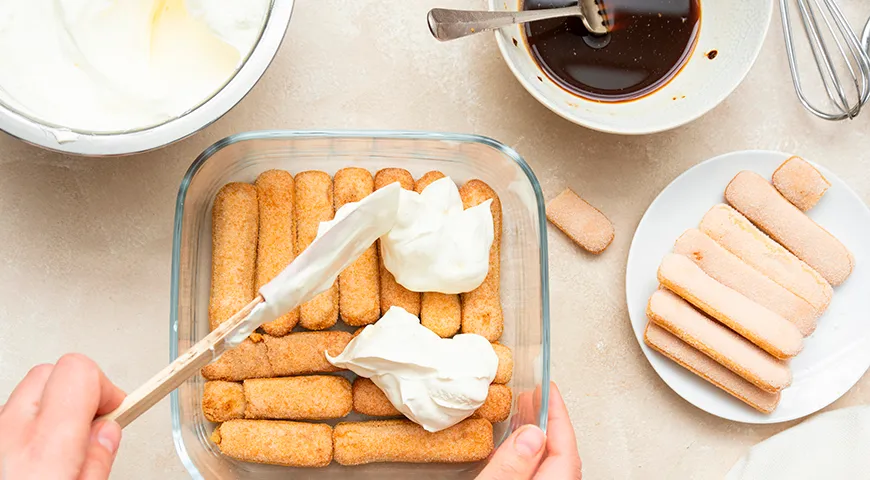
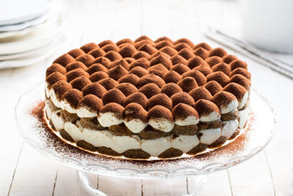

Сварите кофе в гейзерной кофеварке или приготовьте эспрессо. Перелейте в миску и добавьте 2 ст. л. сахара. Перемешайте. Полностью остудите кофе.

Для крема желтки взбейте с оставшимся сахаром до пышной светлой массы.
Добавьте охлажденный маскарпоне и повторно взбейте до однородности.
У итальянцев есть даже специальное определение для правильной консистенции тирамису – это слово cremose, то есть густая, жирная, кремовая.
Именно таким должен быть и крем.

Быстро окунайте савоярди в кофе, чтобы они не успели размокнуть, а только пропитались напитком.
Сразу выкладывайте их в форму плотно друг к другу в один слой.
Сверху выложите половину оставшегося крема, разровняйте его.
На него – оставшееся печенье.

На дно глубокой прямоугольной, лучше стеклянной, формы выложите четверть крема.

Оставшийся крем переложите в кондитерский мешок и красиво отсадите на слой савоярди.
Посыпьте десерт какао через мелкое ситечко.
Поставьте в холодильник минимум на 2 ч. Подавайте в форме.
